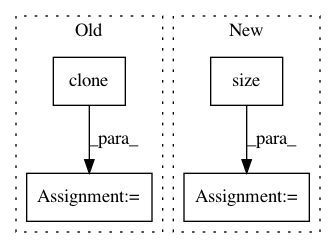

38a40828ec688be626e51ebcb1a60a54479fd997,gpytorch/lazy/kronecker_product_lazy_variable.py,KroneckerProductLazyVariable,mul,#KroneckerProductLazyVariable#Any#,161
Before Change
Returns:
- KroneckerProductLazyVariable with columns[0] = columns[0]*(constant) and columns[i] = columns[i] for i>0
columns = self.columns.clone()
columns[0] = columns[0].mul(constant)
return KroneckerProductLazyVariable(columns, self.J_lefts, self.C_lefts,
self.J_rights, self.C_rights, self.added_diag)
def mul_(self, constant):
After Change
- KroneckerProductLazyVariable with columns[0] = columns[0]*(constant) and columns[i] = columns[i] for i>0
columns = self.columns
constant_tensor = torch.zeros(columns.size()) + 1
constant_tensor[0] = constant_tensor[0] * constant.data
constant_variable = Variable(constant_tensor)
columns = columns * constant_variable
return KroneckerProductLazyVariable(columns, self.J_lefts, self.C_lefts,
In pattern: SUPERPATTERN
Frequency: 3
Non-data size: 4
Instances
Project Name: cornellius-gp/gpytorch
Commit Name: 38a40828ec688be626e51ebcb1a60a54479fd997
Time: 2017-08-29
Author: ruihan.wu14@gmail.com
File Name: gpytorch/lazy/kronecker_product_lazy_variable.py
Class Name: KroneckerProductLazyVariable
Method Name: mul
Project Name: allenai/allennlp
Commit Name: 5acb5a785b9ed60743e6f687a96bd92dd4e88578
Time: 2017-11-29
Author: markn@allenai.org
File Name: allennlp/modules/seq2vec_encoders/pytorch_seq2vec_wrapper.py
Class Name: PytorchSeq2VecWrapper
Method Name: forward
Project Name: pytorch/audio
Commit Name: 3047dc9b500266d8197139fad5ef3a8a4a459985
Time: 2021-02-28
Author: toastedjcaw@gmail.com
File Name: test/torchaudio_unittest/functional/batch_consistency_test.py
Class Name: TestFunctional
Method Name: assert_batch_consistency